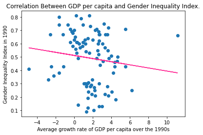

Task 1: Setting up web page, and embedding two charts
Task 2: Two charts: replicating one from the Financial Times, and your first original.
Task 3: Two charts: inline data objects and visual encodings.
Task 4: One chart: Implement a data scraper of your own. Any source, any data.
Task 5: Nine Charts: build a dashboard
Task 6: Two maps: a base map and a choropleth
Task 7: Festival of Economics
Task 10 & 11: Machine learning
